2024 / KOMATSU CUMMINS CHILE
Evaluación de Interfaz minera
Komatsu Cummins Chile es una multinacional del sector maquinaría para la minería, mediante plataformas digitales implementa soluciones de productividad y eficiencia a su maquinaria (SAAS B2B).

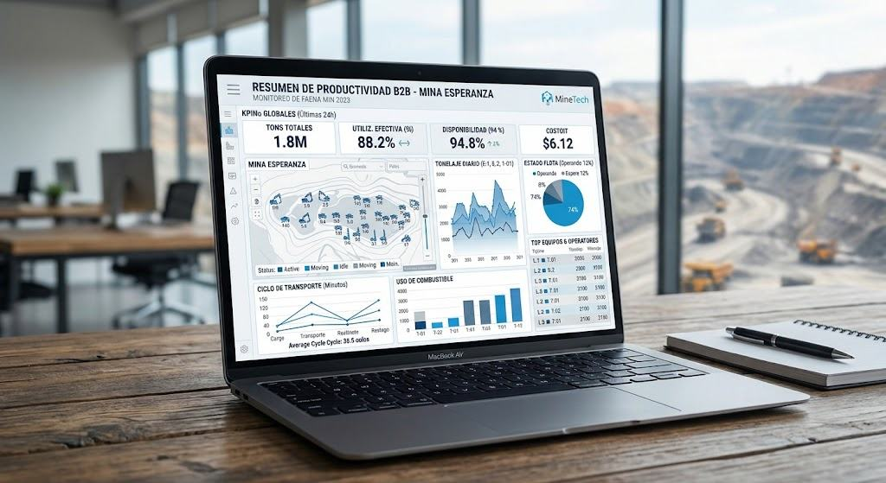
- Rol
- Diseñadora UX/UI en Práctica
- Responsabilidades
- Realización de evaluación heurística completa Propuesta de mejoras visuales y estructurales Participación en workshops de alineación
- Plataforma
- Web B2B
Proceso
Investigación
- Comencé por recopilar información existente de la empresa.
- Herramientas que se ocuparon.
- Busqué las mejores prácticas UX-UI

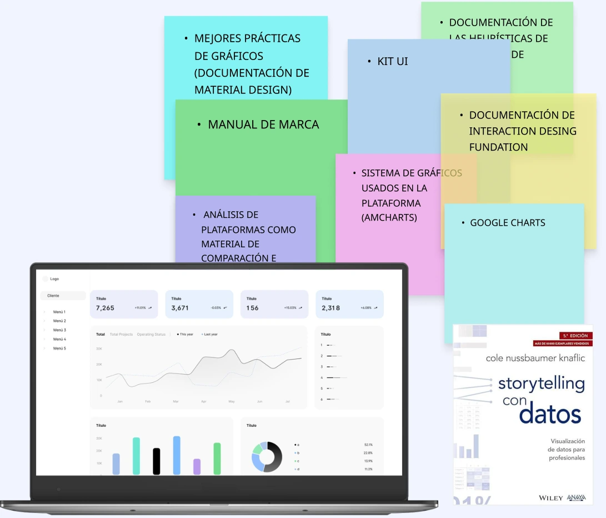
Mapa de sitio
Visualizar la estructura
Realicé una presentación visual de menús, categorías y páginas.
El objetivo fue poder dimensionar áreas profundas, contabilizar páginas por categoría y entender la complejidad del producto.

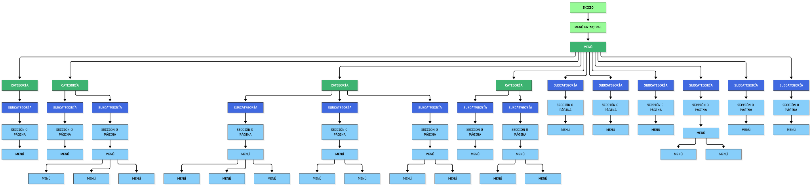
Proceso
Wireflow
- Decidí crear una agrupación visual de elementos repetidos.
- Visualización de flujos de usuario y consistencia de la interfaz.
- Sirvió como base para detectar problemas de jerarquía, duplicación y navegación confusa.
- Poder organizar tiempos de ejecución de la evaluación y organizar tareas.

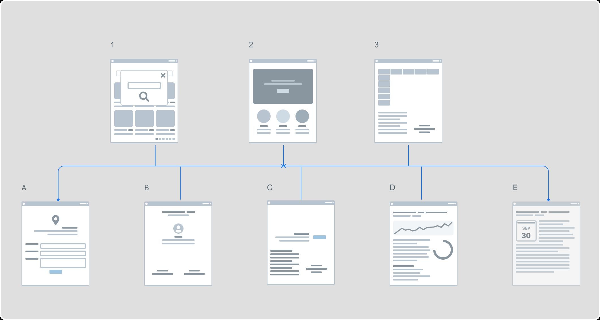
Evaluación heurística
Oportunidades de mejora
Se aplicaron heurísticas de Nielsen para analizar la plataforma, la regla de usabilidad que más se incumple es la 1 que tiene que ver con la información que se le entrega al usuario mediante elementos visuales, la regla 6 en la cual se incumple en que no se ayuda al usuario a reconocer y disminuir la carga cognitiva que le permita la fluidez en la realización de tareas.

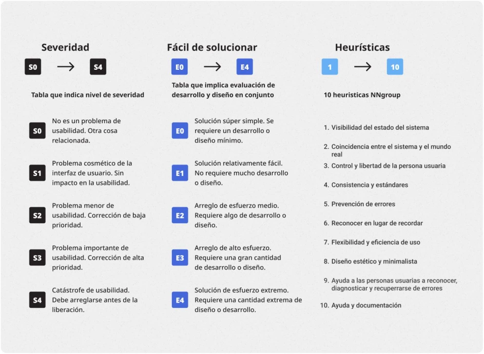

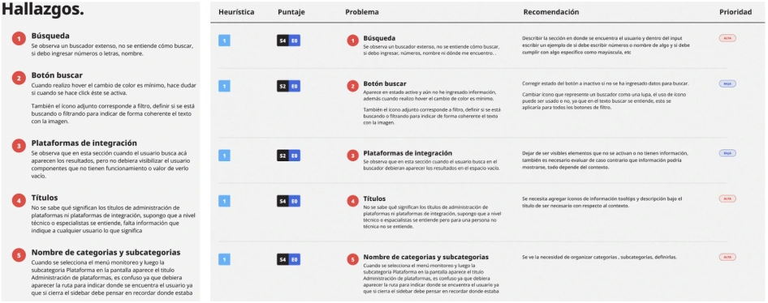
Propuestas de mejora visual
PROPUESTAS DESDE LAS OPORTUNIDADES
Se realizaron propuestas en relación a los resultados de los hallazgos. De esta forma el usuario tiene más pistas para poder identificar y mejora su experiencia.
Antes

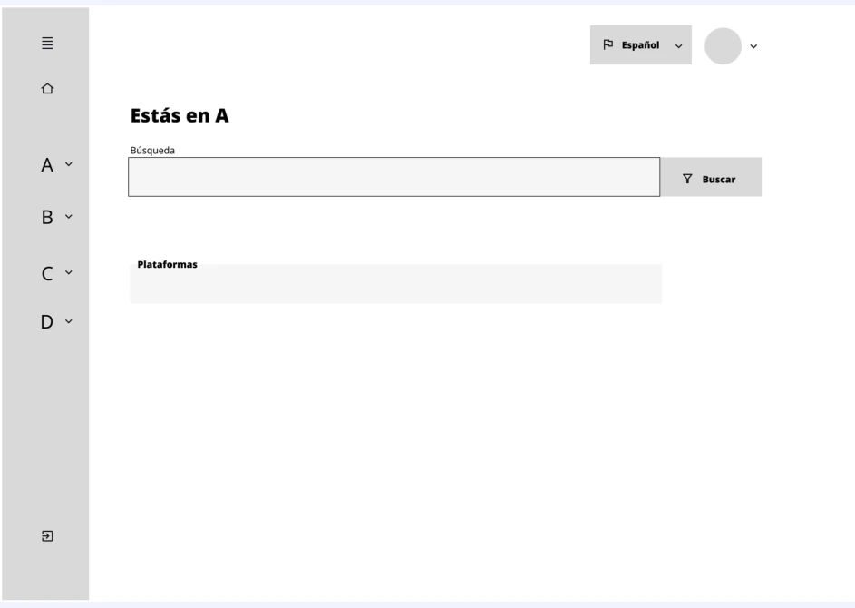
Propuesta

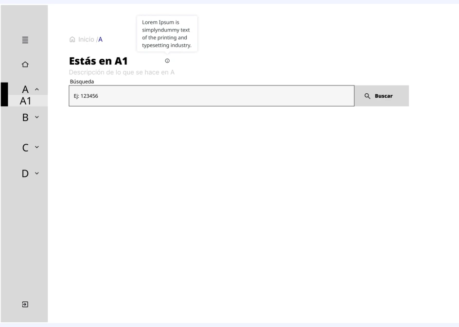
Propuestas de mejora visual
Visualizar datos
Se propuso en este caso visualizar en grupos de a 10 Operadores por página, en orden de mayor a menor, de esta forma se reduce el paginador de 52 a 12 páginas. También se identificó que la barra de Índice de efectividad estaba asociada al % de ranking, entonces se agregó el número de % a la barra de progreso, de esta forma se redujo el ancho de la tarjeta.

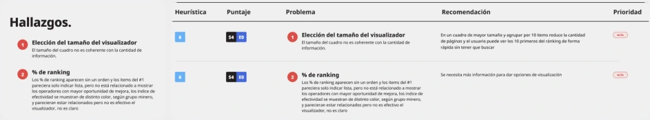
Antes

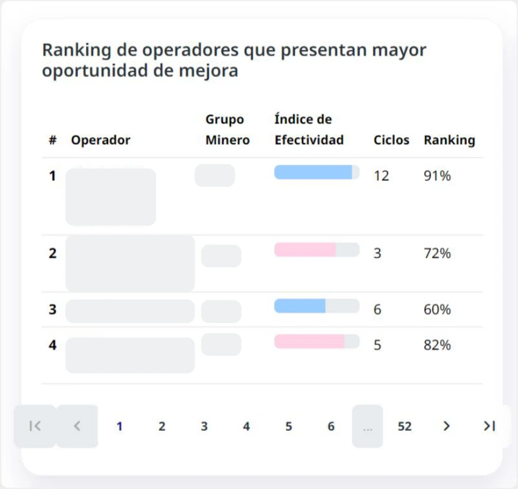
Propuesta

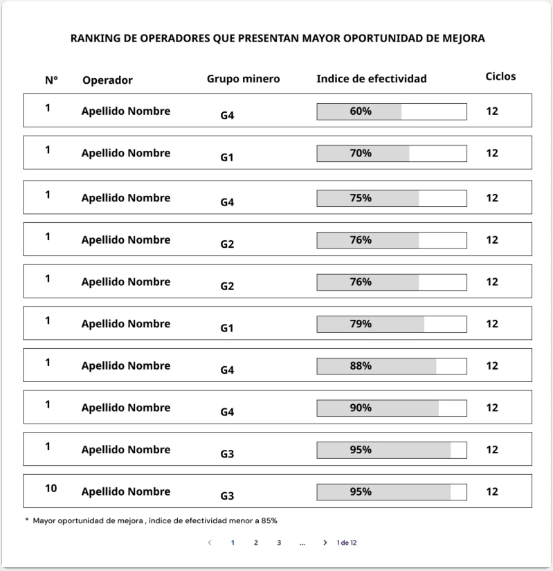